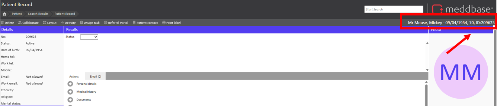
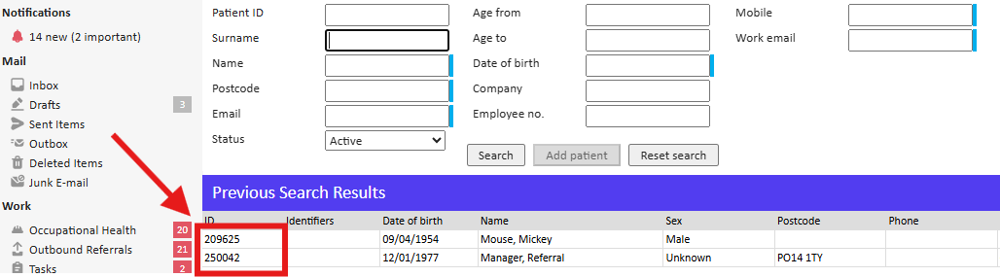

Using Patient IDs allows users to quickly and easily find patients you are referring to when raising a ticket and ensures no personal identifiable information is shared with us.
This article will show you two areas of the system where you can find the Patient ID
The Patient ID can be found in the following areas:
1. In the upper right-hand corner of the patient's medical record:

2. In the leftmost column on the 'find patient' screen:
